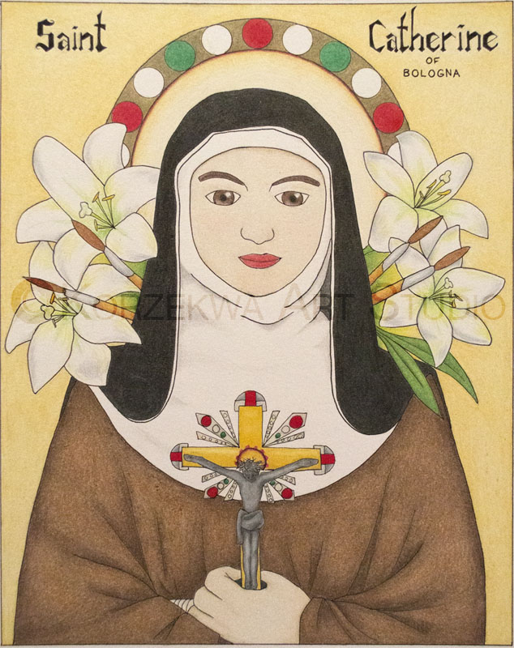

Emily Korzekwa
Saint Catherine of Bologna

Saint Catherine of Bologna is the first in a series of saints because she is the patron saint of artists. My goal for this series is to make a connection between some of the historical art styles of depicting saints, such as Eastern icons, as well as incorporate my own unique style. I also wanted tell her story through historically accurate details, so she is dressed in the habit she wore as a Poor Clare nun in the 1400s, and is surrounded by symbols associated with her life.
Colored pencil and ink on bristol paper
8 in X 10 in